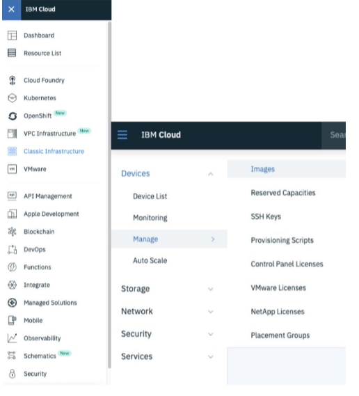
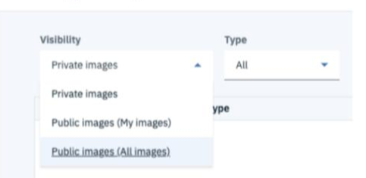
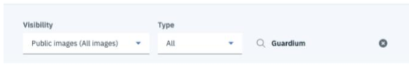
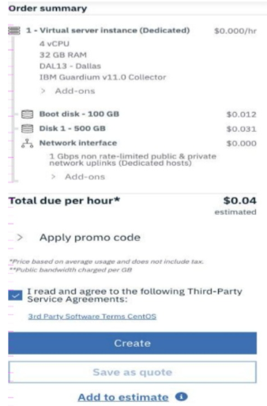
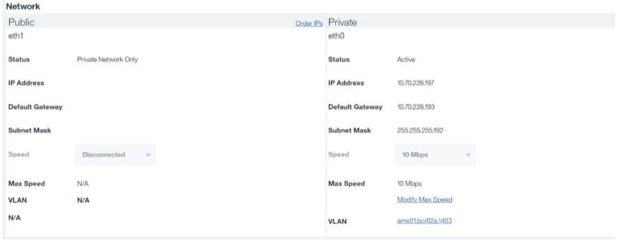

Procedimento de Implantação:
1. Navegue para https://cloud.ibm.com.
2. Efetue login em sua conta do IBM Cloud.
3. Navegue até Classic Infrastructure > Devices > Manage > Images.

4. Na tela Modelos de Imagens, liste todas as Imagens Públicas (Todas as imagens).

5. Filtre a lista de imagens usando o nome do modelo Guardium.

6. Localize o modelo de imagem do Guardium correspondente ao tipo de unidade Coletor ou
Agregador.
7. Para encomendar a imagem, clique no ícone mais opções (…) e selecione o tipo de
imagem que você precisa (Servidor Virtual Público, Reservado, Transitório ou Dedicado
instância [VSI]).
8. Especifique as seguintes opções de configuração necessárias:
a. Tipo de Servidor Virtual:
i. Público (multilocatário)
ii. Dedicado (inquilino único)
iii. Transitório (multilocatário, efêmero)
4. Reservado (multilocatário, compromisso de prazo)
b. Tipo de cobrança
i. De hora em hora
ii. Por mês
Nota: Apenas VSIs com base em um ciclo de cobrança mensal são elegíveis para um
Firewall de Hardware.
c. nome de anfitrião
d. Domínio
e. Localização
i. Selecione um centro de dados.
f. Configuração do sistema
i. Selecione vCPU
Nota: o IBM Security Guardium recomenda um mínimo de 4
vCPUs.
ii. Selecione RAM
Observação: o IBM Security Guardium recomenda um mínimo de 24 GB
de RAM.
g. Interface de rede
i. Velocidades de porta de uplink
Observação: para implantar um VSI sem um IP público, selecione Private Only
interface .
ii. Largura de banda de saída pública
iii. Grupos de segurança
9. Depois de selecionar as configurações, revise seu pedido, leia e concorde com o Contrato de serviço de terceiros e clique em Criar.

10. Após o pedido ser feito, você será redirecionado para a página Dispositivos
onde você pode visualizar o VSI provisionado.
- Configurando a Rede VM:
Nota: As configurações de firewall de hardware só são possíveis para um servidor virtual em um
ciclo de faturamento mensal. Tentativa de configurar um firewall de hardware para um servidor virtual
em um ciclo de cobrança por hora gera o seguinte erro:
2. Scroll down to the Add-ons section. 3. Click Order Hardware Firewall.
4. Revise a configuração do Firewall de hardware, leia e concorde com os Termos de terceiros
Contrato de serviço e clique em Criar.
5. Navegue até o Nome do dispositivo e, em seguida, até a guia Firewall.
6. Configure regras de segurança para o seguinte:
• Para IU: “tcp:8443”
• Para GIM: “tcp:8444-8446; tcp:8081”
• Para FAM: “tcp:16022-16023”
• Para Unix STAP: “tcp:16016-16018”
• Para Windows STAP: “tcp:9500-9501”
• Para Pesquisa Rápida: “tcp:8983; tcp:9983”
• Para MySQL: “tcp:3306”
7. Role para baixo até a seção Rede e anote o seguinte:
• Endereço IP público (se aplicável)
• Endereço IP privado
• Gateway Padrão Privado
• Máscara de sub-rede privada

- Conectando-se ao Guardium Appliance na nuvem
Para se conectar ao dispositivo Guardium por meio do IP privado, você precisa estabelecer uma VPN
conexão com o IBM Cloud Network.
1. Verifique se sua conta de usuário possui credenciais de acesso VPN navegando para
Gerenciar > Acesso (IAM) > Usuários.
2. Clique em sua conta de usuário e role para baixo até a seção de senha VPN para definir
suas credenciais de VPN.
3. Navegue para https://www.ibm.com/cloud/vpn-access.
4. Escolha o portal VPN para o Datacenter desejado.
5. Forneça suas credenciais de login VPN que você definiu na etapa 2.
6. Depois de se conectar ao cliente VPN, você pode SSH e conectar-se à GUI de
sua instância do Guardium.
- Conecte-se à GUI
Depois de estabelecer uma conexão VPN, abra um navegador da Web neste endereço:
https://